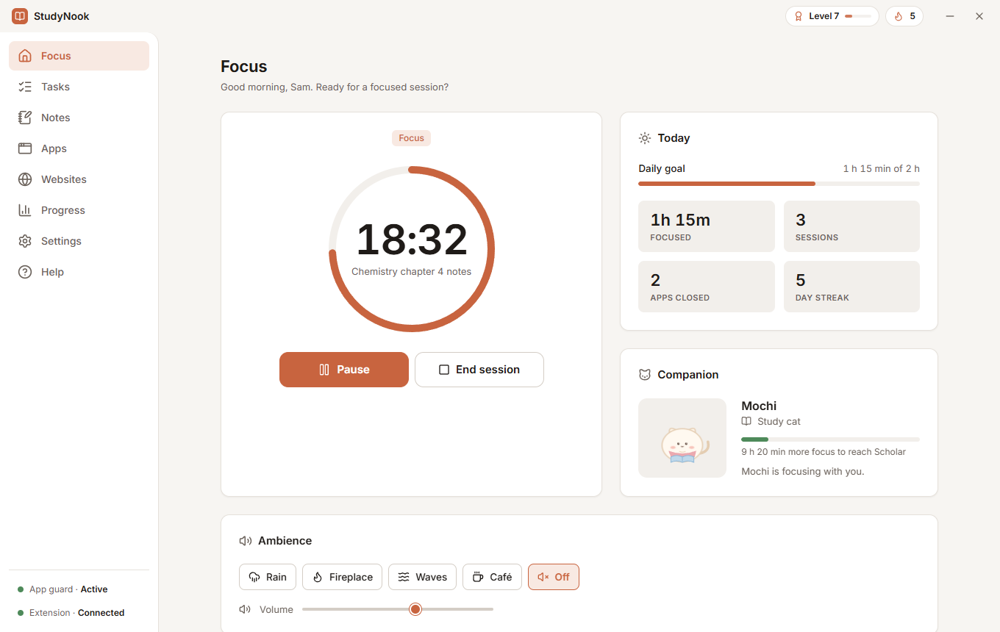
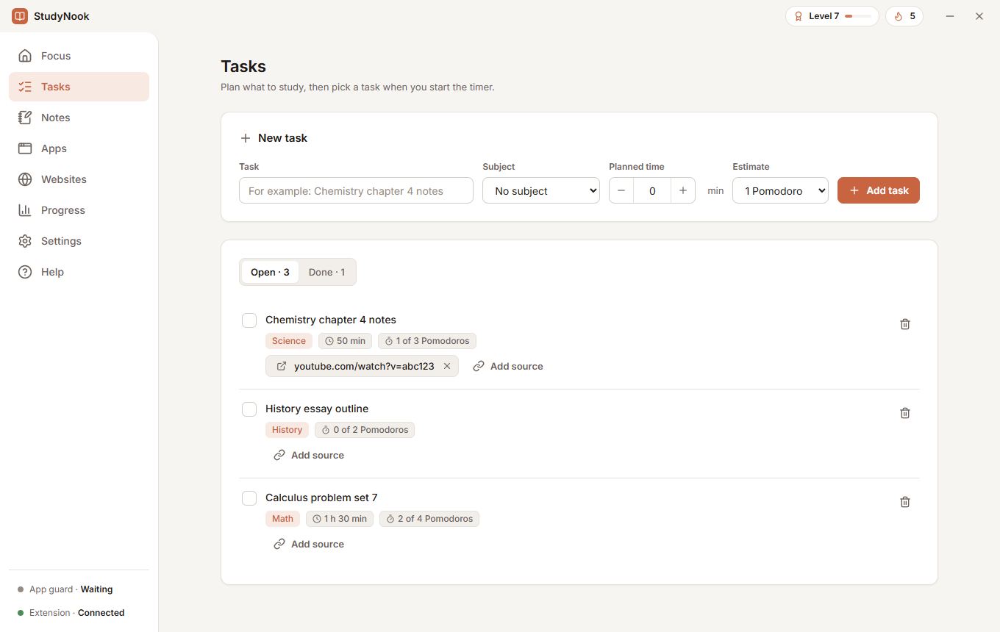
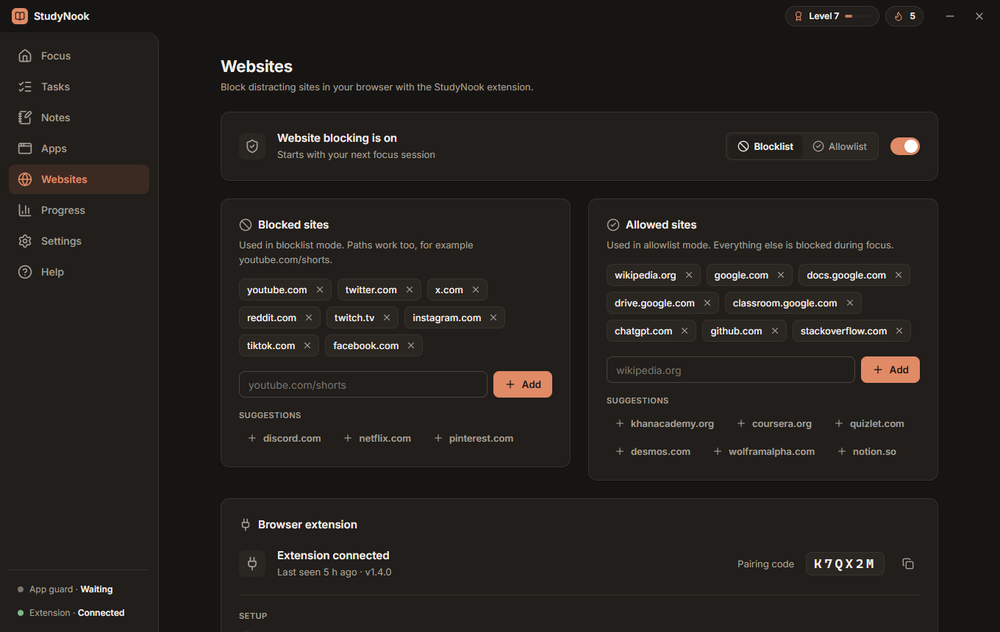
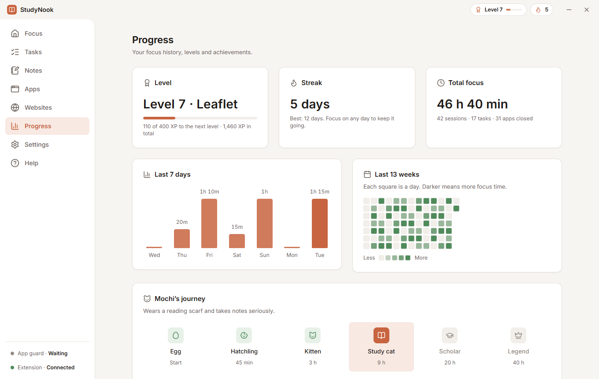
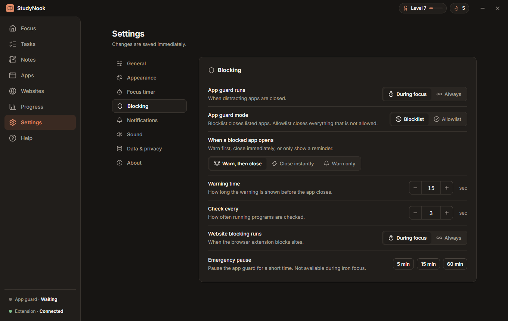
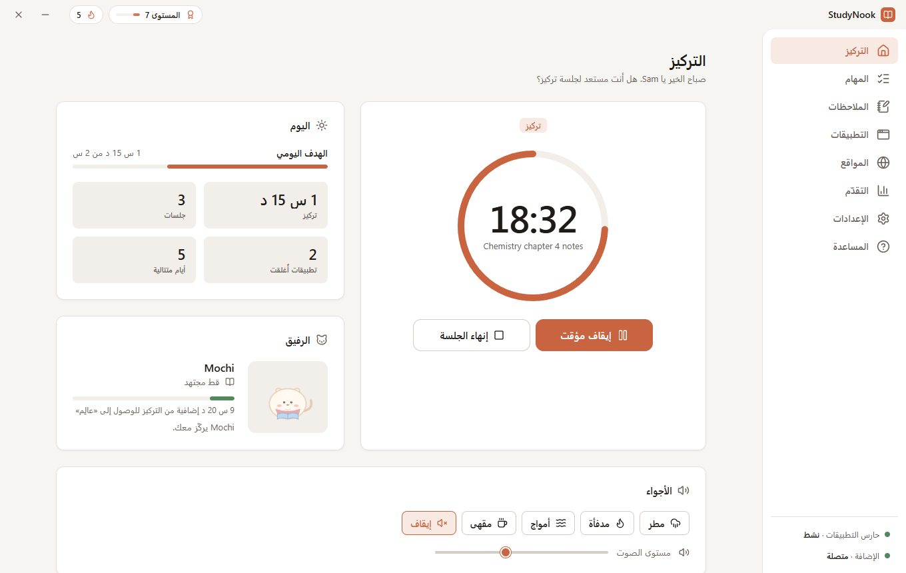
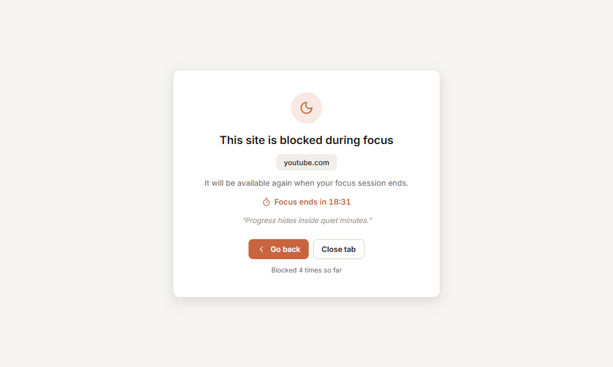

Focus timer
Pomodoro rounds with breaks, or one free-focus block of any length. It keeps running from the tray, with an optional mini timer that stays on top.
StudyNook is a focus timer for Windows that closes the apps and blocks the websites that pull you away, so a study session stays a study session.
English · العربية · Français · Español

One app for the timer, the blockers and your progress.
Pomodoro rounds with breaks, or one free-focus block of any length. It keeps running from the tray, with an optional mini timer that stays on top.
Closes the programs you list while you focus: warn first, close instantly, or just remind you. Blocklist or allowlist mode. System processes are never touched.
A Chrome, Edge or Brave extension blocks distracting sites, even a single path like youtube.com/shorts, and keeps blocking if the app is closed mid-session.
A promise to yourself. Blockers can’t be paused, lists can only grow, and ending early takes a cool-down and a typed sentence.
If the app is closed or killed during a session, a small helper reopens it and your session continues where it left off.
XP, levels, streaks, a daily goal, a 13-week activity map, 24 achievements and a companion that grows with your focus time.
Add a task, or just start a free focus. Choose Pomodoro rounds or one long block.
List the apps and websites that pull you away. Pair the browser extension once with a 6-letter code.
StudyNook closes the distractions and shows a calm page instead of blocked sites. When the timer ends, you earn XP and grow your streak.
Willpower is weakest right when you need it. Turn on an Iron session and StudyNook makes giving up take effort, so a wobble doesn’t end the session.
Light, dark, system or automatic theme, in four languages.






Built for Windows. Your data never leaves your computer.
Download the latest StudyNook-Setup-<version>.exe from Releases and run it.
You need Node.js (LTS).
git clone https://github.com/Amorgabab/StudyNook.git
cd StudyNook/studynook
npm install
npm startWebsite blocking uses a bundled Chrome, Edge or Brave extension. Setup takes four steps and is described in the README.